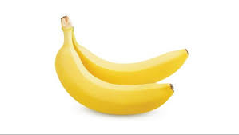

tentangbuah.com

Pisang

Pisang adalah nama umum yang diberikan pada tumbuhan terna berukuran besar dengan daun memanjang
dan besar yang tumbuh langsung dari bagian tangkai. Dalam taksonomi, pisang termasuk dalam genus Musa
dan famili Musaceae. Beragam spesies pisang tersebar di kawasan Malesia. Spesies pisang yang paling
banyak dibudidayakan di dunia adalah pisang hutan. Jenis pisang hutan dapat tumbuh di hutan, bukit
maupun di dataran rendah. Selain itu, pisang juga dapat ditanam bersama dengan tanaman lain seperti
jagung dan ketela pohon.
Pada awalnya pisang merupakan tumbuhan asli yang berasal dari kawasan Asia Tenggara,
kemudian menyebar ke seluruh wilayah dunia. Dari arah barat, pisang menyebar mulai dari
Samudra Atlantik menuju ke Pulau Madagaskar lalu ke Benua Afrika dan menuju ke Amerika Latin
dan Amerika Tengah. Sementara itu, pisang menyebar dari arah timur melalui Samudra Pasifik menuju ke Hawaii.
Khasiat Pisang
- Mengatasi anemia
- Memperlancar metabolismen
- Meningkatkan kekebalan tubuh
- Melancarkan aliran oksigen ke otak